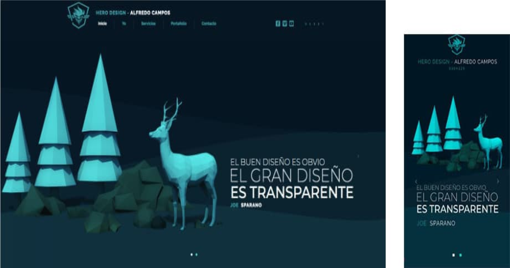

The Good and the Best
A sober, modern design with avant-garde architecture..
A sober, modern design with avant-garde architecture..
A harmonious color, with strong textures, without hesitation, except for the client's perceptive attitude reflected in its logo.
Art is made in everything, anyone makes art, but how to make a page for an artist who does not want to be recognized as one?.
We translate the desire to buy on a page of opaque colors, you put the color with your expenses.
Reality is lived from the first breath. Our Virtual Reality is lived from the first image.
In our world shadows are black. In this virtually created world they are any color you want them to be.